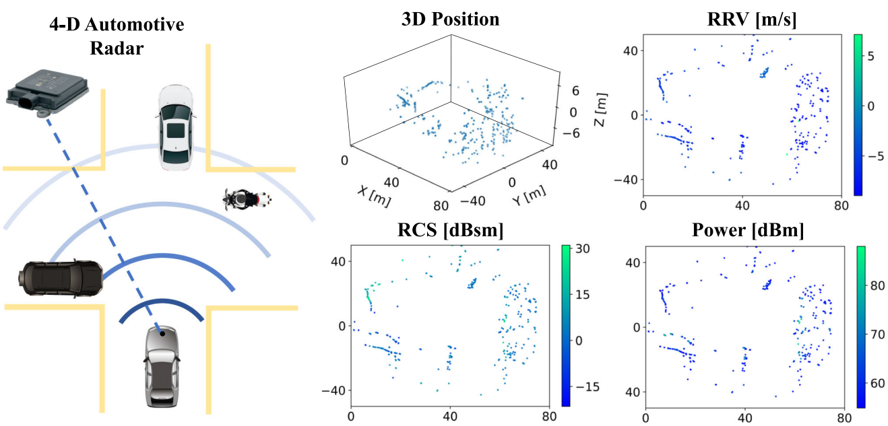
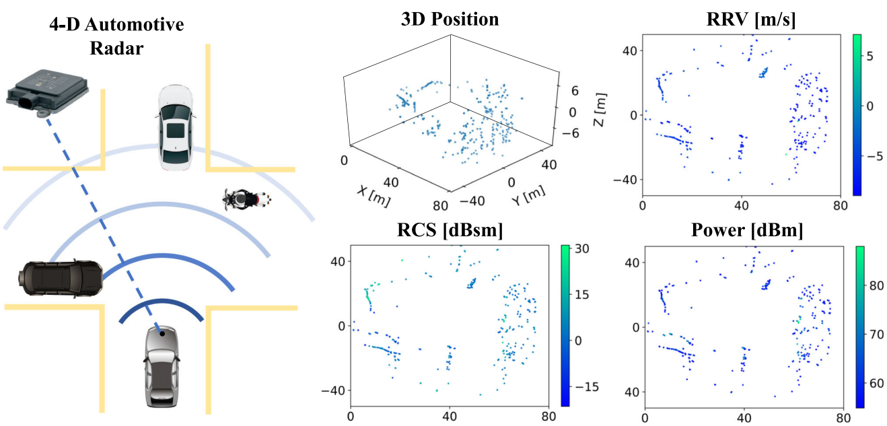

Fangqiang Ding
Ph.D. Candidate
University of Edinburgh
About Me
I am a second-year PhD student in the School of Informatics at the University of Edinburgh, fully-funded by CDT-RAS scholarship. My supervisor is Dr. Chris Xiaoxuan Lu, who leads the Mobile Autonomy, Perception and Sensing (MAPS) Lab. Prior to this, I received my B.Eng degree with the highest honoured Academic Star from Tongji University in Shanghai (2017-2021). During my bachelor study, I also worked as a research assistant at Vision4Robotics Lab in Tongji University and did some research in Tsinghua University as a visiting student.
Towards developing new-generation mobile robots characterized by robust perception under visual degradation, my research interest is at the junction of robotics, mobile sensing and computer vision. I currently work on 4D radar-enabled intelligent perception with its application to autonomous driving and other mobile robot scenarios. My goal is to exploit the potential of the emerging 4D radar sensing technology and increase its influence in various domains. My previous research includes visual object tracking, UAV self-localization and image processing.
Education
-
PhD in Robotics and Autonomous Systems, 2021-2025 (expected)
University of Edinburgh, UK
-
B.Eng in Machanical Engineering, 2017-2021
Tongji University, China
 
